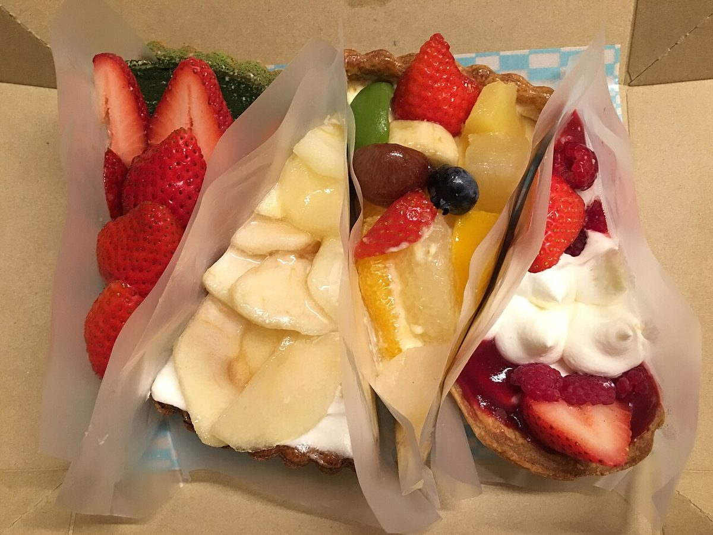
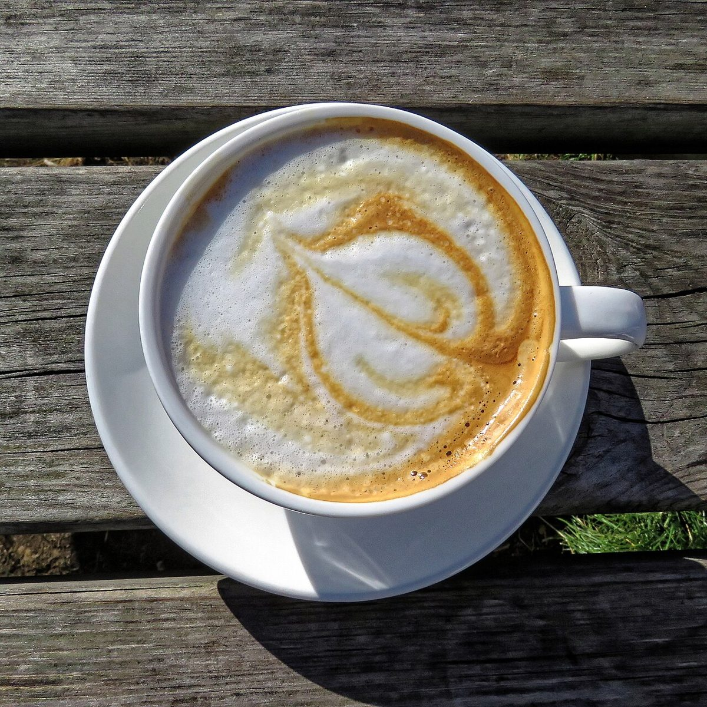

メニュー
メニューの内容・価格は準備中です(お問い合わせください)
掲載できる内容がそろうまで、お電話またはInstagramでお問い合わせください。
準備中(お問い合わせください)
 イメージ
イメージ準備中(お問い合わせください)

イメージ準備中(お問い合わせください)

イメージ準備中(お問い合わせください)
準備中(お問い合わせください)
準備中(お問い合わせください)
ご利用の前に
アレルギーや食材についてのご質問、テイクアウトができるか、席があるかどうかは、お電話でお問い合わせください。写真は、メニューの内容を示すものではありません。